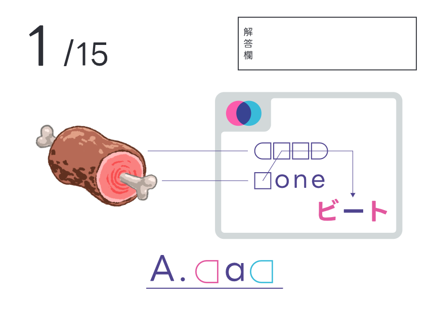
meat boneでbeat、niku honeでhikuなので、man
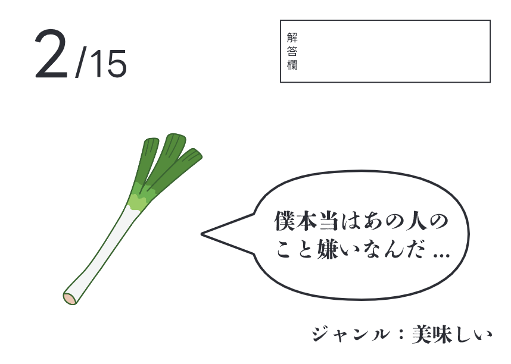
ねぎが吐露してるので、ネギトロ
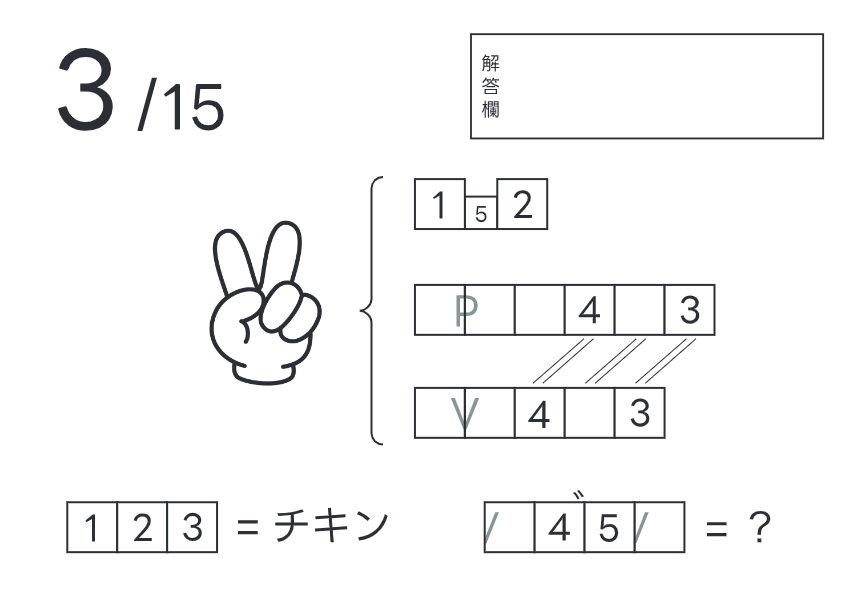
ちょき ピースサイン ブイサイン なので、いざよい
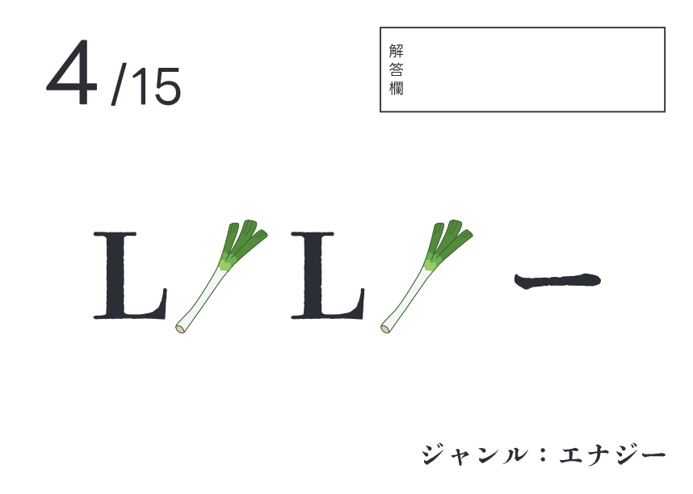
エルとネギから、エネルギー
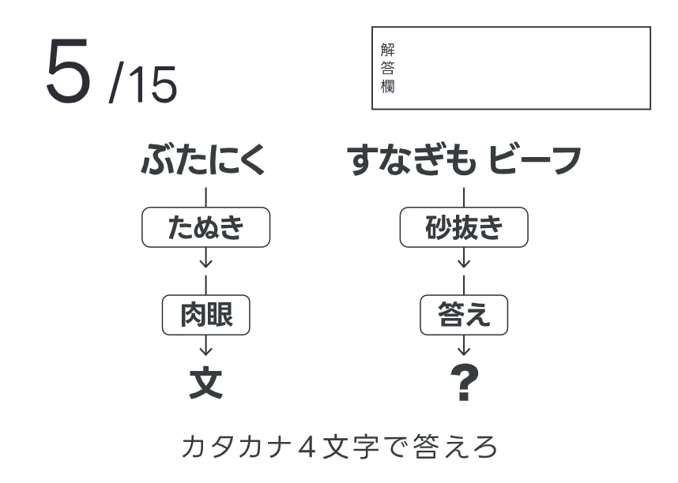
たぬきはがき暗号、疑問符にするために「ビーがン」を適用
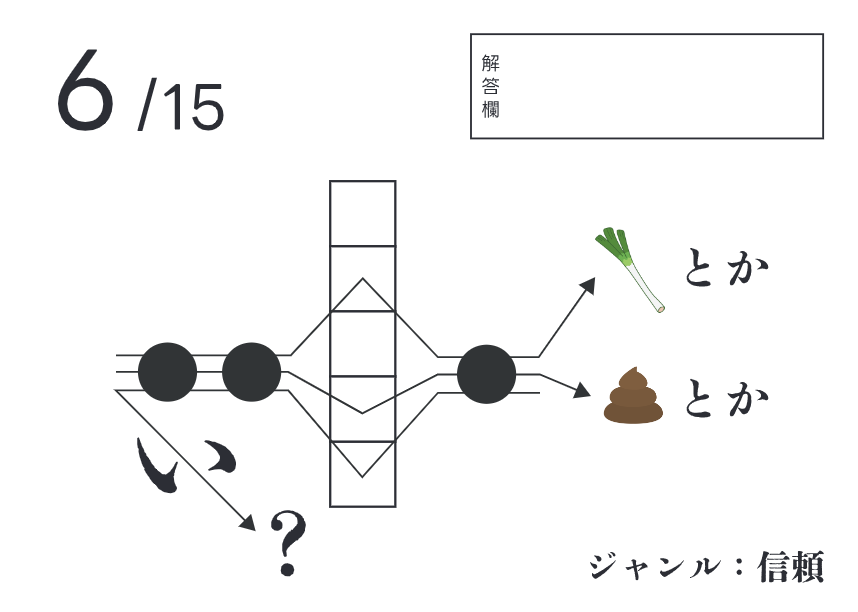
ねぎと言えば下仁田、💩と言えば下ネタなので、しもたとなにぬねので、頼もしい
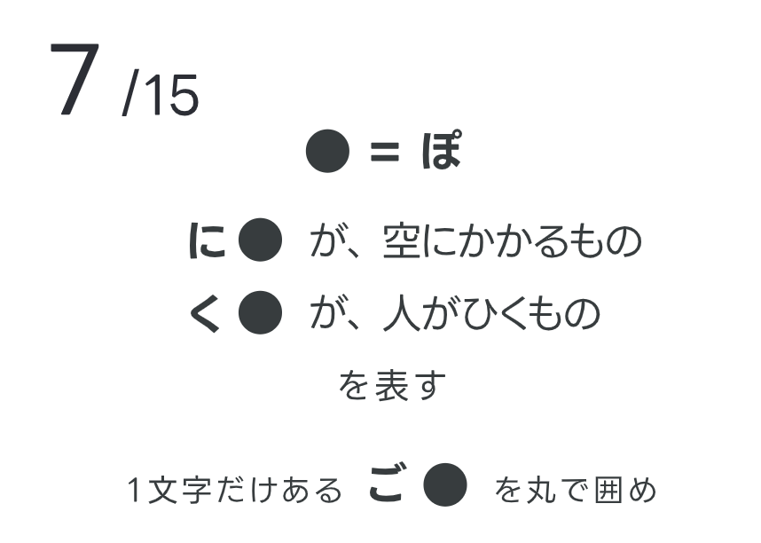
にじが空にかかってくじが引くもの。ぽが誤字ってるので囲みましょう
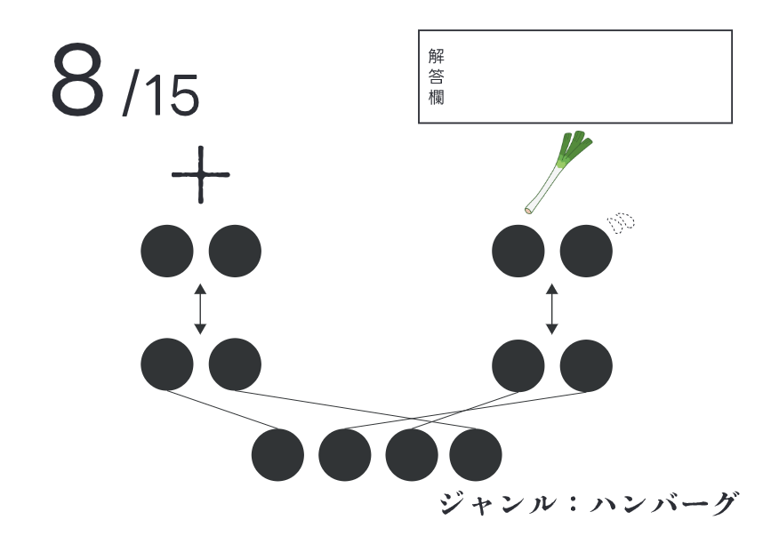
たすの対義語はひく、ねぎから濁点をとったネキの対義語はまあニキ。よってひき肉
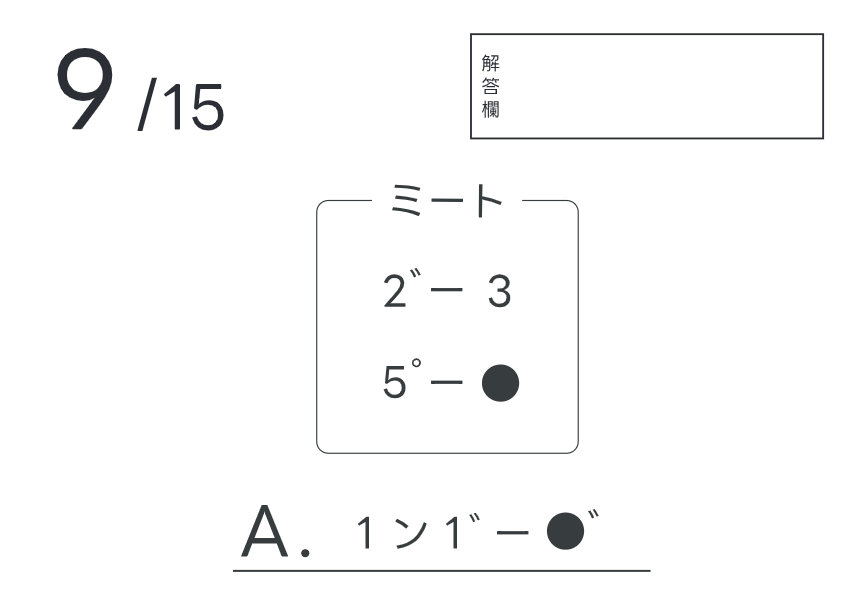
ビーフポークで12345ははひふへほ。ハンバーグ
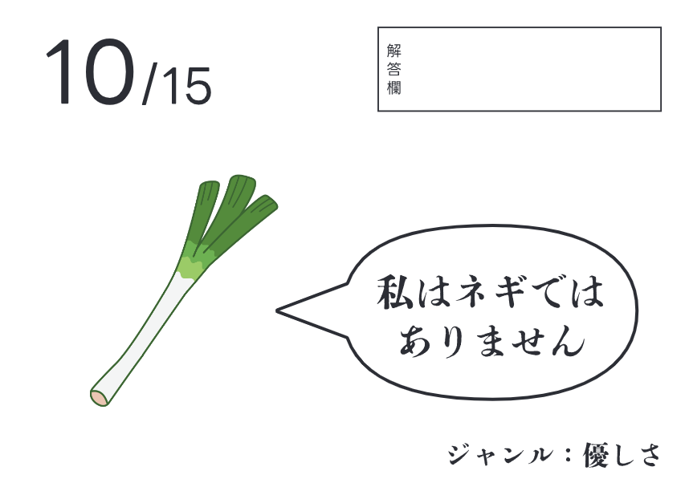
ねぎが嘘ついてるので、ねぎらい
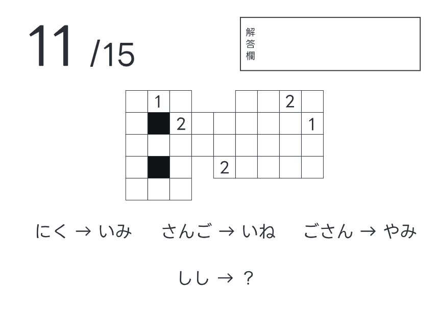
五十音表の一部。にくなら2*9の長方形を見て、その中の12を読む、みたいな感じ。4*4の中にある12は、いか
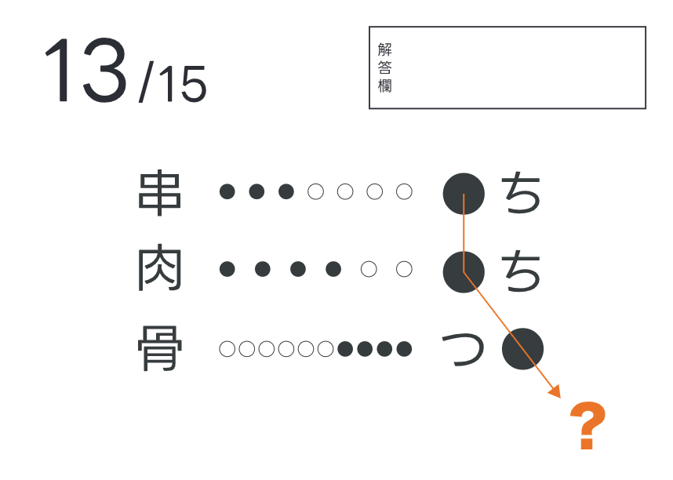
画数の謎、口と内と月からくうき。
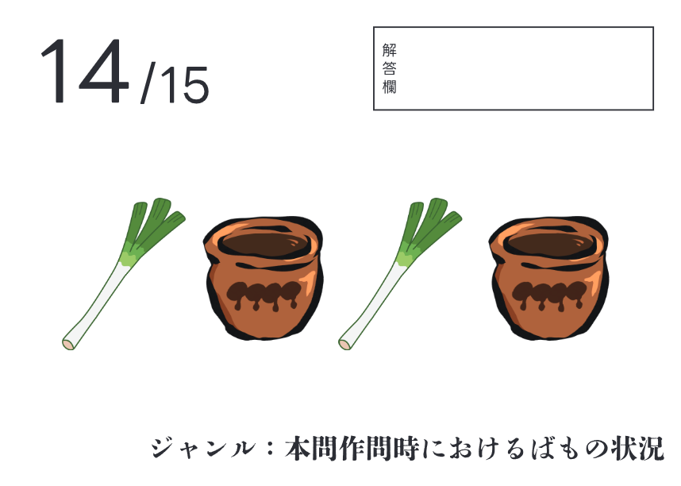
ねぎとたれで、ネタ切れ
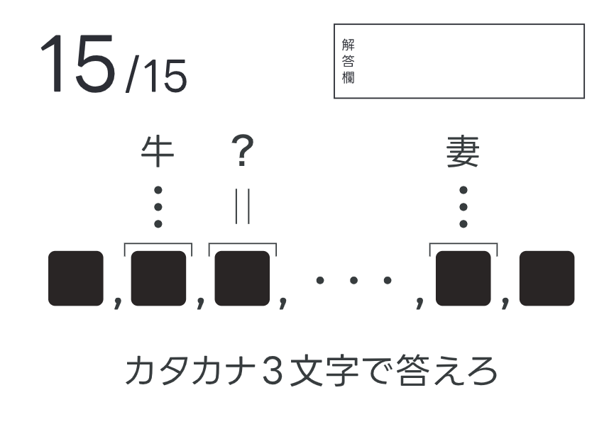
牛と妻をビーフとワイフのように変換すると、アルファベットの読みにふをつけてることがわかり、シーフ。とき筋ではないけど「ふたしてる」ってね！